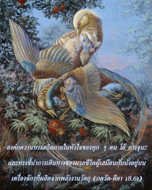
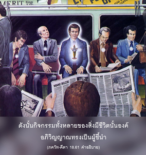
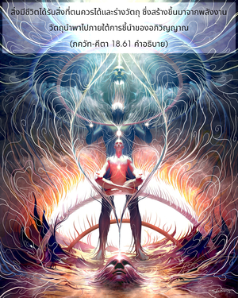

องค์ภควานทรงสถิตภายในหัวใจของทุกๆคน โอ้ อรฺชุน และทรงชี้นำการเดินทางของมวลชีวิตผู้เสมือนกับนั่งอยู่บนเครื่องจักรที่ผลิตจากพลังงานวัตถุ



อรฺชุน ทรงไม่ใช่ผู้รู้สูงสุด และการตัดสินใจในการสู้หรือไม่สู้ อยู่ในขอบเขตของดุลยพินิจที่จำกัดของตนเอง องค์กฺฤษฺณทรงสั่งสอนว่าปัจเจกชีวิตไม่ใช่ทุกสิ่งทุกอย่าง บุคลิกภาพสูงสุดแห่งพระเจ้าหรือองค์กฺฤษฺณเองในฐานะที่เป็นอภิวิญญาณทรงประทับอยู่ภายในหัวใจและทรงชี้แนะสิ่งมีชีวิต หลังจากเปลี่ยนร่างกายแล้วสิ่งมีชีวิตลืมกรรมเก่าในอดีตของตน แต่อภิวิญญาณในฐานะที่เป็นผู้รู้อดีต ปัจจุบัน และอนาคตยังทรงเป็นพยานในกิจกรรมของเขาทั้งหมด ดังนั้นกิจกรรมทั้งหลายของสิ่งมีชีวิตนั้นองค์อภิวิญญาณทรงเป็นผู้ชี้นำ สิ่งมีชีวิตได้รับสิ่งที่ตนควรได้และร่างวัตถุ ซึ่งสร้างขึ้นมาจากพลังงานวัตถุนำพาไป ภายใต้การชี้นำของอภิวิญญาณ ทันทีที่สิ่งมีชีวิตถูกวางให้อยู่ในร่างอะไรก็แล้วแต่ เขาต้องทำงานภายใต้มนต์สะกดของสถานการณ์ทางร่างกายนั้น บุคคลนั่งอยู่ในรถที่มีความเร็วสูงจะไปได้เร็วกว่าผู้ที่นั่งในรถที่ช้ากว่า ถึงแม้ว่าสิ่งมีชีวิตหรือคนขับอาจจะเหมือนกัน ในทำนองเดียวกัน จากคำสั่งของดวงวิญญาณสูงสุดธรรมชาติวัตถุออกแบบร่างกายที่เหมาะสมสำหรับสิ่งมีชีวิตโดยเฉพาะ เพื่อเขาอาจทำงานตามความปรารถนาของตนในอดีตซึ่งสิ่งมีชีวิตไม่เป็นอิสระ เราไม่ควรคิดว่าตนเองเป็นอิสระจากบุคลิกภาพสูงสุดแห่งพระเจ้า ปัจเจกชีวิตอยู่ภายใต้การควบคุมขององค์ภควานฺเสมอ ฉะนั้น หน้าที่ของเขา คือ การศิโรราบ และนั่นคือคำสอนของโศลกต่อไป